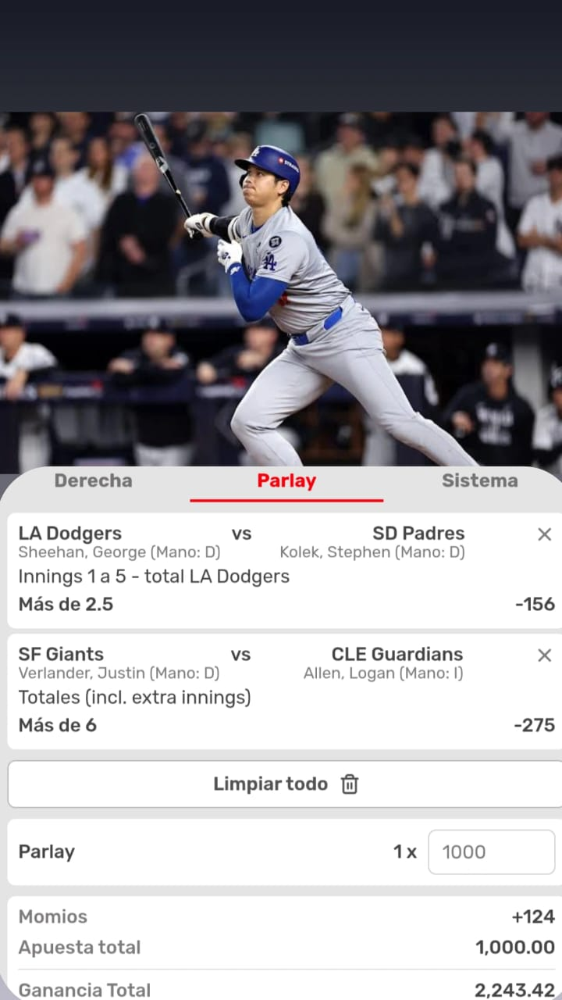

¡Gracias por tu compra! 📈
Aquí tienes el pronóstico exclusivo del día. Este análisis fue preparado especialmente para ayudarte a tomar decisiones informadas.

⚾Los Dodgers promedian 3.03 carreras en las primeras cinco entradas de cada partido, colocándolos en el segundo puesto de la MLB en esa categoría.
🧠Factores que apoyan el Over 6 carreras:
🧢Retorno de Justin Verlander: Justin Verlander, lanzador de los Giants, regresa tras una lesión. Aunque es un veterano experimentado, su rendimiento reciente ha sido inconsistente, con una efectividad (ERA) de 4.33 en 10 aperturas esta temporada. Además, ha permitido al menos una carrera en cada una de sus salidas, lo que podría indicar vulnerabilidad ante la ofensiva de los Guardians.
🔥Desempeño ofensivo de los Guardians: A pesar de estar en la parte baja de la tabla en cuanto a carreras anotadas, los Guardians han mostrado capacidad para generar ofensiva en juegos recientes. Su bateo oportuno y la presencia de jugadores clave como José Ramírez podrían contribuir a un aumento en las carreras.